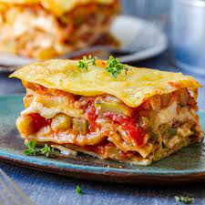

Hearty Vegetable Lasagna

Description
This vegetable lasagna it is super healthy and easy to cook, you should try it!
Ingredients
- 1 (16 Ounce) Package lasagna noodles.
- 1 Pound fresh mushrooms,sliced.
- ¾ Cup chopped green bell pepper.
- ¾ Cup chopped onion.
- 3 Cloves garlic,minced.
2 Tablespoons vegetable oil.
- 2 (26 Ounce) Jars pasta sauce.
- 1 Teaspoon dried basil.
- 1 (15 Ounce) Container part-skim ricotta cheese.
- 4 Cups shredded mozzarella cheese.
- 2 Eggs.
- ½ Cup grated Parmesan cheese.
Steps
- Cook the lasagna noodles in a large pot of boiling water for 10 minutes, or until al dente. Rinse with cold water, and drain.
- In a large saucepan, cook and stir mushrooms, green peppers, onion, and garlic in oil. Stir in pasta sauce and basil; bring to a boil. Reduce heat, and simmer 15 minutes.
- Mix together ricotta, 2 cups mozzarella cheese, and eggs.
- Preheat oven to 350 degrees F (175 degrees C). Spread 1 cup tomato sauce into the bottom of a greased 9x13 inch baking dish. Layer 1/2 each, lasagna noodles, ricotta mix, sauce, and Parmesan cheese. Repeat layering, and top with remaining 2 cups mozzarella cheese.
- Bake, uncovered, for 40 minutes. Let stand 15 minutes before serving.